Sistema de Gestión de Biblioteca Escolar
Documento integrado del proyecto final
| Integrante | Paquete |
|---|---|
| Alvaro | A · Usuarios y reportes |
| Diego Fuentes Rubí | B · Administración del acervo |
| Ricardo | C · Préstamos y reservas |
| Samanta | D · Multas y notificaciones |
Profesor: · Entrega: diciembre de 2026
Contenido
1. Introducción y alcance
El sistema administra la biblioteca escolar: catálogo y ejemplares, préstamos y reservas, multas y pagos, notificaciones a los usuarios y reportes para el bibliotecario. Lo usan tres tipos de usuario: estudiantes y profesores (usuarios lectores, con políticas de préstamo distintas) y bibliotecarios.
Está construido con Django 5.2 siguiendo el patrón MTV (modelo, plantilla, vista), sobre MySQL 8.4 en Docker. Las reglas de negocio viven en servicios y métodos de modelo; las vistas solo orquestan.
2. Especificación
2.1 Requerimientos
Los requerimientos funcionales (RF), no funcionales (RNF) y reglas de negocio (RN) completos están en docs/requerimientos/requerimientos_proyecto_final.html.
2.2 Diagrama general de casos de uso

2.3 Paquete A · Usuarios y reportes Alvaro
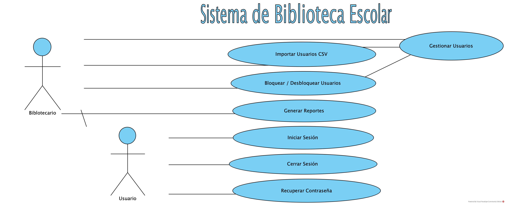
<section class="cu">…</section>) y reemplaza el texto.- CU-01 Iniciar sesión
- CU-02 Cerrar sesión
- CU-03 Recuperar contraseña
- CU-20 Gestionar usuarios
- CU-21 Importar usuarios desde CSV
- CU-22 Bloquear / desbloquear usuario
- CU-32 Generar reportes
2.4 Paquete B · Administración del acervo Diego
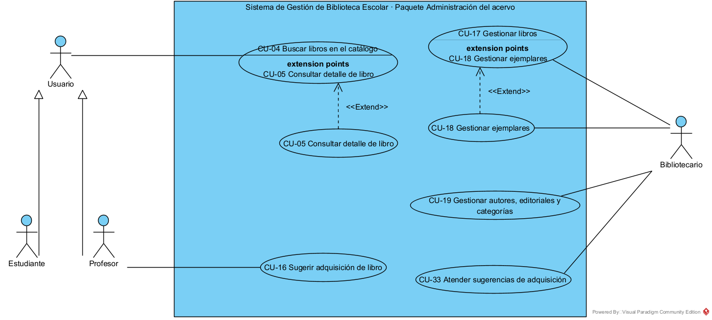
CU-04 · Buscar libros en el catálogo
| Versión / autor / fecha | 1.0 · Diego Fuentes Rubí · 25/11/2026 |
|---|---|
| Actor principal | Usuario (Estudiante, Profesor o Bibliotecario) |
| Actores secundarios | — |
| Descripción | El usuario busca libros por título, autor, ISBN, categoría o editorial y ve cuántos ejemplares hay disponibles de cada uno. |
| Disparador | El usuario abre «Catálogo» en el menú. |
| Precondiciones |
|
| Postcondiciones (éxito) |
|
| Garantías mínimas | La búsqueda no altera el catálogo; si falla, se muestra un mensaje y la lista vacía. |
| Flujo básico |
|
| Flujos alternativos |
|
| Excepciones |
|
| Reglas de negocio | RN-15 (solo cuenta como disponible el ejemplar DISPONIBLE). |
| Requisitos especiales | RNF-05: respuesta menor a 2 s con 10,000 libros (consulta con select_related, prefetch_related y conteos anotados). RNF-04: responsive. |
| Relaciones | Es extendido por CU-05. |
| Frecuencia / prioridad | Muy alta: cientos de veces al día. Prioridad alta (RF-02). |
CU-05 · Consultar detalle de libro
| Versión / autor / fecha | 1.0 · Diego Fuentes Rubí · 25/11/2026 |
|---|---|
| Actor principal | Usuario (Estudiante, Profesor o Bibliotecario) |
| Actores secundarios | — |
| Descripción | El usuario consulta los datos completos de un libro y su disponibilidad, y desde ahí puede solicitarlo o reservarlo. |
| Disparador | El usuario selecciona un libro en los resultados de búsqueda (CU-04). |
| Precondiciones |
|
| Postcondiciones (éxito) |
|
| Garantías mínimas | La consulta no modifica datos. |
| Flujo básico |
|
| Flujos alternativos |
|
| Excepciones |
|
| Reglas de negocio | RN-15. |
| Requisitos especiales | RNF-04. |
| Relaciones | Extiende CU-04; es extendido por CU-06 y CU-11. |
| Frecuencia / prioridad | Muy alta. Prioridad alta. |
CU-16 · Sugerir adquisición de libro
| Versión / autor / fecha | 1.0 · Diego Fuentes Rubí · 25/11/2026 |
|---|---|
| Actor principal | Profesor |
| Actores secundarios | Bibliotecario (la atiende en CU-33) |
| Descripción | El profesor sugiere a la biblioteca la compra de un libro, con una justificación académica. |
| Disparador | El profesor selecciona «Sugerir libro» en el menú. |
| Precondiciones |
|
| Postcondiciones (éxito) |
|
| Garantías mínimas | Si falla la validación no se guarda nada y se conservan los datos capturados. |
| Flujo básico |
|
| Flujos alternativos |
|
| Excepciones |
|
| Reglas de negocio | — |
| Requisitos especiales | RNF-02 (acceso restringido por rol). |
| Relaciones | — |
| Frecuencia / prioridad | Baja: algunas veces por semestre. Prioridad baja (RF-16). |
CU-17 · Gestionar libros (alta, consulta, modificación, baja)
| Versión / autor / fecha | 1.0 · Diego Fuentes Rubí · 25/11/2026 |
|---|---|
| Actor principal | Bibliotecario |
| Actores secundarios | — |
| Descripción | El bibliotecario registra libros nuevos, edita sus datos y autores, y los da de baja lógicamente. |
| Disparador | El bibliotecario selecciona «Nuevo libro» en el catálogo, o «Editar libro» / «Dar de baja» en el detalle. |
| Precondiciones |
|
| Postcondiciones (éxito) |
|
| Garantías mínimas | La baja es atómica: si no puede completarse, ningún ejemplar cambia de estado. |
| Flujo básico |
|
| Flujos alternativos |
|
| Excepciones |
|
| Reglas de negocio | RN-13 (costo de reposición), RN-16 (sin borrado físico; baja lógica). |
| Requisitos especiales | Portada con ImageField (Pillow). Baja dentro de transaction.atomic() con select_for_update() (RNF-03). |
| Relaciones | Es extendido por CU-18. |
| Frecuencia / prioridad | Media: varias veces por semana. Prioridad alta (RF-10). |
CU-18 · Gestionar ejemplares
| Versión / autor / fecha | 1.0 · Diego Fuentes Rubí · 25/11/2026 |
|---|---|
| Actor principal | Bibliotecario |
| Actores secundarios | — |
| Descripción | El bibliotecario registra las copias físicas de un libro y actualiza su ubicación y su estado (disponible, en reparación o baja). |
| Disparador | En el detalle de un libro selecciona «Agregar ejemplar» o «Editar» en un ejemplar. |
| Precondiciones |
|
| Postcondiciones (éxito) |
|
| Garantías mínimas | Un ejemplar PRESTADO, RESERVADO o PERDIDO no cambia de estado desde esta pantalla. |
| Flujo básico |
|
| Flujos alternativos |
|
| Excepciones |
|
| Reglas de negocio | RN-15 (EN_REPARACION, PERDIDO y BAJA no se prestan), RN-16. |
| Requisitos especiales | Los estados PRESTADO y RESERVADO solo los asignan los servicios de préstamos mediante Ejemplar.cambiar_estado(). |
| Relaciones | Extiende CU-17. |
| Frecuencia / prioridad | Media. Prioridad alta (RF-10). |
CU-19 · Gestionar autores, editoriales y categorías
| Versión / autor / fecha | 1.0 · Diego Fuentes Rubí · 25/11/2026 |
|---|---|
| Actor principal | Bibliotecario |
| Actores secundarios | — |
| Descripción | El bibliotecario mantiene los catálogos auxiliares que se usan al registrar libros. |
| Disparador | En el catálogo selecciona «Autores», «Editoriales» o «Categorías». |
| Precondiciones |
|
| Postcondiciones (éxito) |
|
| Garantías mínimas | Nunca se elimina un registro que usa algún libro (PROTECT). |
| Flujo básico |
|
| Flujos alternativos |
|
| Excepciones |
|
| Reglas de negocio | — |
| Requisitos especiales | Integridad referencial con on_delete=PROTECT. |
| Relaciones | — |
| Frecuencia / prioridad | Baja. Prioridad alta (RF-10). |
CU-33 · Atender sugerencias de adquisición
| Versión / autor / fecha | 1.0 · Diego Fuentes Rubí · 25/11/2026 |
|---|---|
| Actor principal | Bibliotecario |
| Actores secundarios | Profesor (recibe la respuesta) |
| Descripción | El bibliotecario revisa las sugerencias de los profesores y las aprueba o rechaza con una respuesta. |
| Disparador | El bibliotecario selecciona «Sugerencias» en el menú. |
| Precondiciones |
|
| Postcondiciones (éxito) |
|
| Garantías mínimas | Una sugerencia ya respondida no puede volver a responderse. |
| Flujo básico |
|
| Flujos alternativos |
|
| Excepciones |
|
| Reglas de negocio | — |
| Requisitos especiales | RNF-02. |
| Relaciones | — |
| Frecuencia / prioridad | Baja. Prioridad baja (RF-16). |
2.5 Paquete C · Préstamos y reservas Ricardo
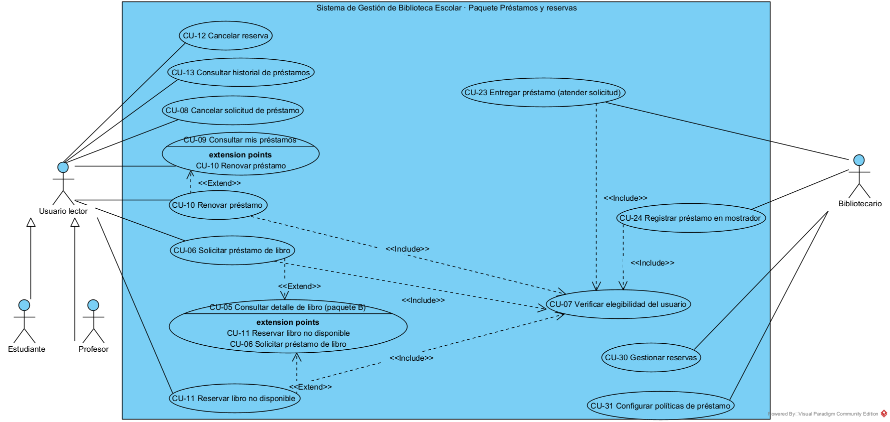
<section class="cu">…</section>) y reemplaza el texto.- CU-06 Solicitar préstamo de libro
- CU-07 Verificar elegibilidad del usuario
- CU-08 Cancelar solicitud de préstamo
- CU-09 Consultar mis préstamos
- CU-10 Renovar préstamo
- CU-11 Reservar libro no disponible
- CU-12 Cancelar reserva
- CU-13 Consultar historial de préstamos
- CU-23 Entregar préstamo (atender solicitud)
- CU-24 Registrar préstamo en mostrador
- CU-30 Gestionar reservas
- CU-31 Configurar políticas de préstamo
2.6 Paquete D · Multas y notificaciones Samanta
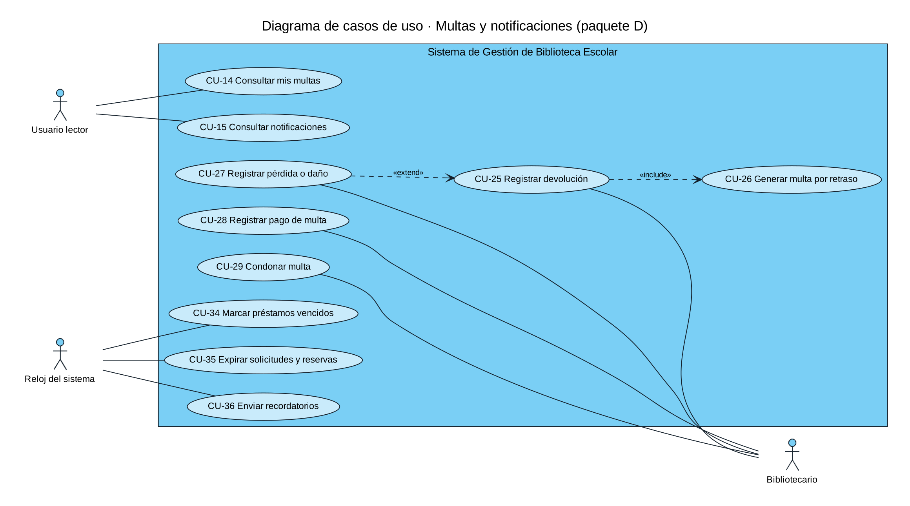
<section class="cu">…</section>) y reemplaza el texto.- CU-14 Consultar mis multas
- CU-15 Consultar notificaciones
- CU-25 Registrar devolución
- CU-26 Generar multa por retraso
- CU-27 Registrar pérdida o daño de ejemplar
- CU-28 Registrar pago de multa
- CU-29 Condonar multa
- CU-34 Marcar préstamos vencidos
- CU-35 Expirar solicitudes y reservas no atendidas
- CU-36 Enviar recordatorios de vencimiento
3. Diseño
3.1 Clases de dominio

3.2 Clases de diseño por paquete
Paquete A · Usuarios y reportes Alvaro

Paquete B · Administración del acervo Diego
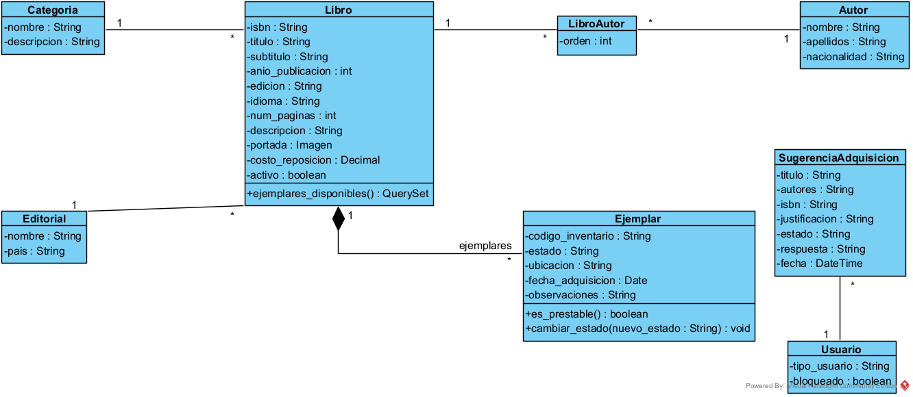
Clases del modelo de catalogo y su servicio. Los nombres coinciden con el código.
- Categoria: nombre {unique}, descripcion [0..1]
- Editorial: nombre {unique}, pais [0..1]
- Autor: nombre, apellidos, nacionalidad [0..1]
- Libro: isbn {unique}, titulo, subtitulo [0..1], anio_publicacion [0..1], edicion [0..1], idioma, num_paginas [0..1], descripcion [0..1], portada [0..1], costo_reposicion, activo ·
+ ejemplares_disponibles(): QuerySet<Ejemplar> - LibroAutor (clase de asociación Libro–Autor): orden · {uq_libro_autor}
- Ejemplar: codigo_inventario {unique}, ubicacion [0..1], estado: EstadoEjemplar, fecha_adquisicion [0..1], observaciones [0..1] ·
+ es_prestable(): Boolean·+ cambiar_estado(estado: EstadoEjemplar) - SugerenciaAdquisicion: titulo, autores, isbn [0..1], justificacion, estado: EstadoSugerencia, respuesta [0..1], fecha
- «enumeration» EstadoEjemplar: DISPONIBLE, RESERVADO, PRESTADO, EN_REPARACION, PERDIDO, BAJA · «enumeration» EstadoSugerencia: PENDIENTE, APROBADA, RECHAZADA
- «service» catalogo.services: buscar_libros(…), dar_de_baja_libro(libro), reactivar_libro(libro), responder_sugerencia(sugerencia, estado, respuesta)
Asociaciones: Categoria 1 — 0..* Libro · Editorial 1 — 0..* Libro · Libro 1..* — 1..* Autor (vía LibroAutor) · Libro 1 — 0..* Ejemplar · Profesor 1 — 0..* SugerenciaAdquisicion.
Paquete C · Préstamos y reservas Ricardo

Paquete D · Multas y notificaciones Samanta
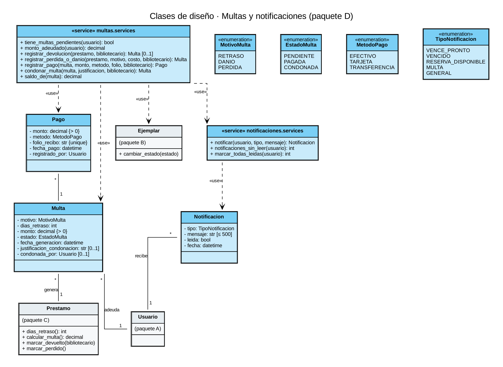
3.3 Diagramas de secuencia


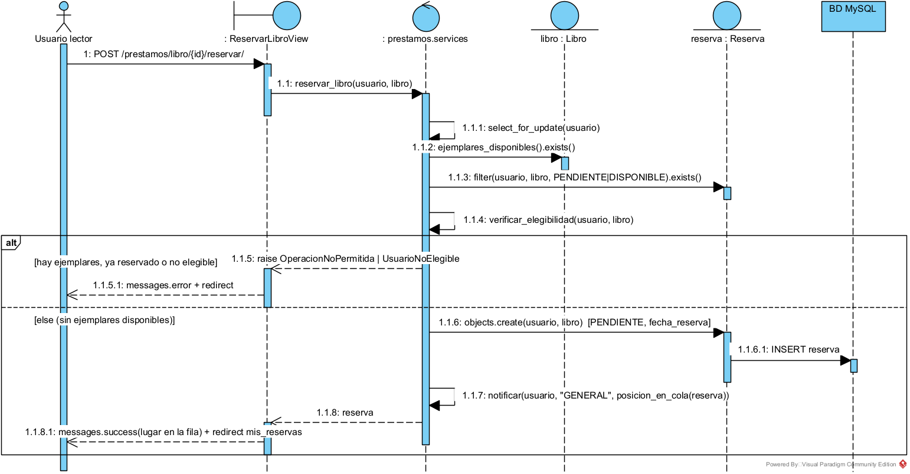
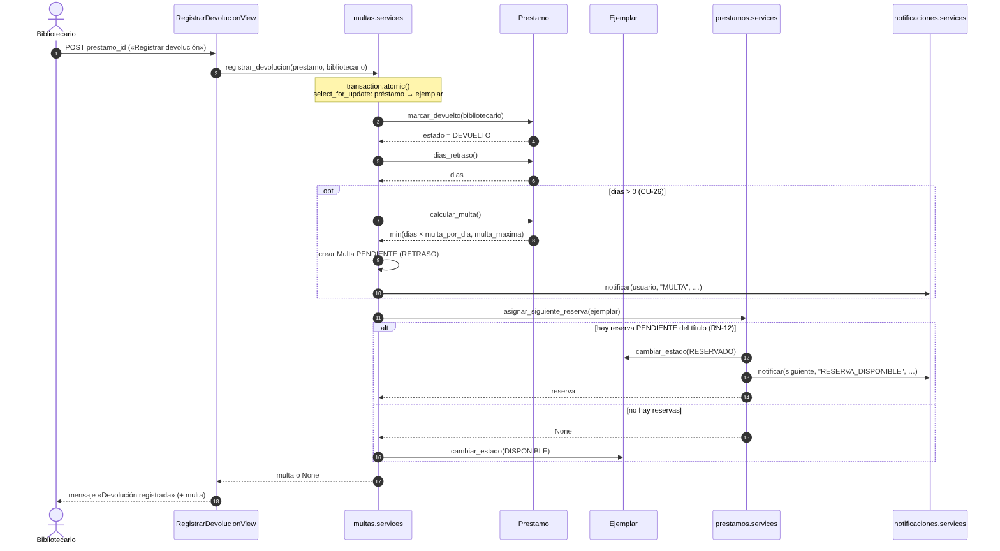
3.4 Diagramas de actividades
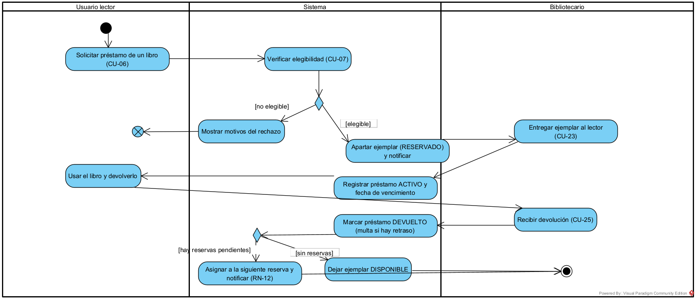
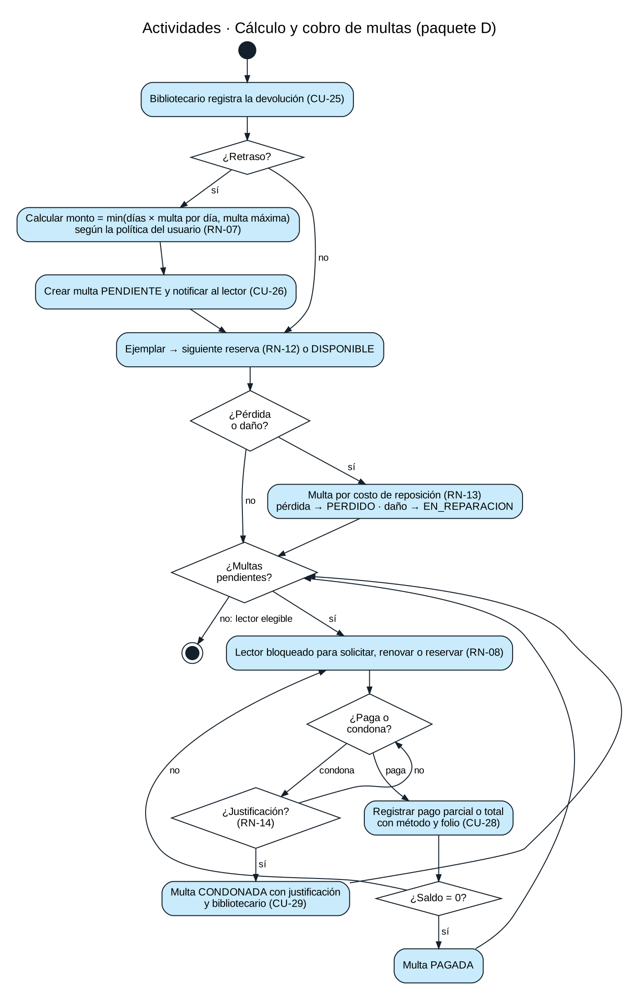

3.5 Diagramas de estados
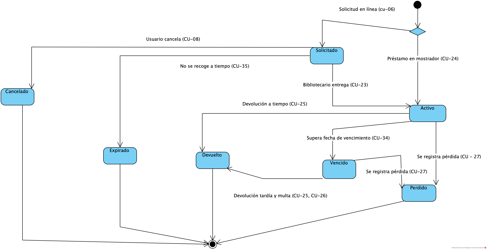
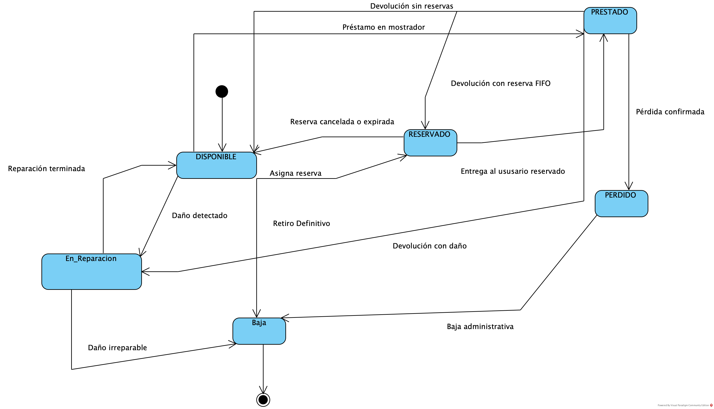
4. Base de datos
Las tablas las generan las migraciones de Django y coinciden con el esquema de referencia del profesor (docs/bd/esquema_bd_biblioteca.html): mismos nombres de tablas y columnas, tipos, CHECK, índices y reglas on_delete. Se omiten las 9 tablas propias del framework (auth_*, django_* y usuario_groups/usuario_user_permissions).
4.1 Diagrama entidad-relación físico

4.2 Diccionario de datos
Generado desde los modelos con python manage.py diccionario_datos; los tipos son los de MySQL.
usuario
Modelo: cuentas.Usuario
| Columna | Tipo | Nulo | Llave | Valor por defecto | Descripción |
|---|---|---|---|---|---|
id | bigint auto_increment | No | PK | Identificador | |
password | varchar(128) | No | Contraseña | ||
last_login | datetime(6) | Sí | Último ingreso | ||
is_superuser | tinyint(1) | No | False | Es superusuario | |
username | varchar(150) | No | UQ | Nombre de usuario | |
first_name | varchar(150) | No | Nombre | ||
last_name | varchar(150) | No | Apellido | ||
is_staff | tinyint(1) | No | False | Es staff | |
is_active | tinyint(1) | No | True | Activo | |
date_joined | datetime(6) | No | now() | Fecha de creación | |
email | varchar(254) | No | UQ | ||
tipo_usuario | varchar(15) | No | Índice | Tipo usuario. Valores: ESTUDIANTE · PROFESOR · BIBLIOTECARIO | |
telefono | varchar(20) | Sí | Telefono | ||
bloqueado | tinyint(1) | No | False | Bloqueado | |
motivo_bloqueo | varchar(255) | Sí | Motivo bloqueo |
Restricciones:
ck_usuario_tipo: CHECK (tipo_usuario IN ('ESTUDIANTE', 'PROFESOR', 'BIBLIOTECARIO'))
carrera
Modelo: cuentas.Carrera
| Columna | Tipo | Nulo | Llave | Valor por defecto | Descripción |
|---|---|---|---|---|---|
id | bigint auto_increment | No | PK | Identificador | |
clave | varchar(10) | No | UQ | Clave | |
nombre | varchar(120) | No | Nombre |
departamento
Modelo: cuentas.Departamento
| Columna | Tipo | Nulo | Llave | Valor por defecto | Descripción |
|---|---|---|---|---|---|
id | bigint auto_increment | No | PK | Identificador | |
nombre | varchar(120) | No | UQ | Nombre |
estudiante
Modelo: cuentas.Estudiante
| Columna | Tipo | Nulo | Llave | Valor por defecto | Descripción |
|---|---|---|---|---|---|
usuario_id | bigint | No | PK, FK → usuario | Usuario | |
matricula | varchar(20) | No | UQ | Matricula | |
semestre | smallint unsigned | No | Semestre | ||
carrera_id | bigint | No | FK → carrera | Carrera |
Restricciones:
ck_estudiante_semestre: CHECK (semestre >= 1 AND semestre <= 12)
profesor
Modelo: cuentas.Profesor
| Columna | Tipo | Nulo | Llave | Valor por defecto | Descripción |
|---|---|---|---|---|---|
usuario_id | bigint | No | PK, FK → usuario | Usuario | |
num_empleado | varchar(20) | No | UQ | Num empleado | |
departamento_id | bigint | No | FK → departamento | Departamento |
categoria
Clasificación temática de los libros (CU-04, CU-19).
Modelo: catalogo.Categoria
| Columna | Tipo | Nulo | Llave | Valor por defecto | Descripción |
|---|---|---|---|---|---|
id | bigint auto_increment | No | PK | Identificador | |
nombre | varchar(100) | No | UQ | Nombre | |
descripcion | varchar(255) | Sí | Descripción |
editorial
Editoriales de los libros del acervo (CU-19).
Modelo: catalogo.Editorial
| Columna | Tipo | Nulo | Llave | Valor por defecto | Descripción |
|---|---|---|---|---|---|
id | bigint auto_increment | No | PK | Identificador | |
nombre | varchar(150) | No | UQ | Nombre | |
pais | varchar(60) | Sí | País |
autor
Autores. Un autor puede tener varios libros (ver LibroAutor).
Modelo: catalogo.Autor
| Columna | Tipo | Nulo | Llave | Valor por defecto | Descripción |
|---|---|---|---|---|---|
id | bigint auto_increment | No | PK | Identificador | |
nombre | varchar(100) | No | Nombre(s) | ||
apellidos | varchar(150) | No | Índice | Apellidos | |
nacionalidad | varchar(60) | Sí | Nacionalidad |
libro
Título del catálogo. Las copias físicas son Ejemplar (CU-04, CU-05, CU-17).
Modelo: catalogo.Libro
| Columna | Tipo | Nulo | Llave | Valor por defecto | Descripción |
|---|---|---|---|---|---|
id | bigint auto_increment | No | PK | Identificador | |
isbn | varchar(13) | No | UQ | Isbn | |
titulo | varchar(255) | No | Índice | Título | |
subtitulo | varchar(255) | Sí | Subtítulo | ||
anio_publicacion | smallint unsigned | Sí | Año de publicación | ||
edicion | varchar(30) | Sí | Edición | ||
idioma | varchar(30) | No | 'Español' | Idioma | |
num_paginas | smallint unsigned | Sí | Número de páginas | ||
descripcion | longtext | Sí | Descripción | ||
portada | varchar(100) | Sí | Portada | ||
costo_reposicion | decimal(10,2) | No | 0 | Costo de reposición | |
activo | tinyint(1) | No | True | Activo | |
categoria_id | bigint | No | FK → categoria | Categoría | |
editorial_id | bigint | No | FK → editorial | Editorial |
libro_autor
Tabla puente libro ↔ autor; guarda el orden del autor en la portada.
Modelo: catalogo.LibroAutor
| Columna | Tipo | Nulo | Llave | Valor por defecto | Descripción |
|---|---|---|---|---|---|
id | bigint auto_increment | No | PK | Identificador | |
orden | smallint unsigned | No | 1 | Orden | |
autor_id | bigint | No | FK → autor | Autor | |
libro_id | bigint | No | FK → libro | Libro |
Restricciones:
uq_libro_autor: UNIQUE (libro, autor)
ejemplar
Copia física de un libro (CU-18). Su estado dice si se puede prestar.
Modelo: catalogo.Ejemplar
| Columna | Tipo | Nulo | Llave | Valor por defecto | Descripción |
|---|---|---|---|---|---|
id | bigint auto_increment | No | PK | Identificador | |
codigo_inventario | varchar(30) | No | UQ | Código de inventario | |
ubicacion | varchar(50) | Sí | Ubicación | ||
estado | varchar(15) | No | Índice | Ejemplar.Estado.DISPONIBLE | Estado. Valores: DISPONIBLE · RESERVADO · PRESTADO · EN_REPARACION · PERDIDO · BAJA |
fecha_adquisicion | date | Sí | Fecha de adquisición | ||
observaciones | varchar(255) | Sí | Observaciones | ||
libro_id | bigint | No | FK → libro | Libro |
Restricciones:
ck_ejemplar_estado: CHECK (estado IN ('DISPONIBLE', 'RESERVADO', 'PRESTADO', 'EN_REPARACION', 'PERDIDO', 'BAJA'))
sugerencia_adquisicion
Sugerencia de compra de un profesor y su respuesta (CU-16, CU-33).
Modelo: catalogo.SugerenciaAdquisicion
| Columna | Tipo | Nulo | Llave | Valor por defecto | Descripción |
|---|---|---|---|---|---|
id | bigint auto_increment | No | PK | Identificador | |
titulo | varchar(255) | No | Título | ||
autores | varchar(255) | No | Autores | ||
isbn | varchar(13) | Sí | Isbn | ||
justificacion | longtext | No | Justificación | ||
estado | varchar(10) | No | SugerenciaAdquisicion.Estado.PENDIENTE | Estado. Valores: PENDIENTE · APROBADA · RECHAZADA | |
respuesta | varchar(255) | Sí | Respuesta | ||
fecha | datetime(6) | No | fecha y hora al crear | Fecha | |
profesor_id | bigint | No | FK → profesor | Profesor |
Restricciones:
ck_sugerencia_estado: CHECK (estado IN ('PENDIENTE', 'APROBADA', 'RECHAZADA'))
politica_prestamo
Parámetros de préstamo por tipo de usuario lector (RN-01 a RN-06).
Modelo: prestamos.PoliticaPrestamo
| Columna | Tipo | Nulo | Llave | Valor por defecto | Descripción |
|---|---|---|---|---|---|
id | bigint auto_increment | No | PK | Identificador | |
tipo_usuario | varchar(15) | No | UQ | Tipo de usuario. Valores: ESTUDIANTE · PROFESOR | |
dias_prestamo | smallint unsigned | No | Días de préstamo | ||
max_libros | smallint unsigned | No | Máximo de libros | ||
max_renovaciones | smallint unsigned | No | Máximo de renovaciones | ||
multa_por_dia | decimal(8,2) | No | Multa por día | ||
multa_maxima | decimal(8,2) | No | Multa máxima | ||
horas_para_recoger | smallint unsigned | No | Horas para recoger | ||
actualizado_en | datetime(6) | No | fecha y hora al guardar | Actualizado en |
Restricciones:
ck_politica_multas: CHECK (multa_maxima >= 0 AND multa_por_dia >= 0)ck_politica_tipo: CHECK (tipo_usuario IN ('ESTUDIANTE', 'PROFESOR'))
prestamo
Préstamo de un ejemplar a un usuario lector, de la solicitud a la devolución.
Modelo: prestamos.Prestamo
| Columna | Tipo | Nulo | Llave | Valor por defecto | Descripción |
|---|---|---|---|---|---|
id | bigint auto_increment | No | PK | Identificador | |
estado | varchar(12) | No | Índice | Prestamo.Estado.SOLICITADO | Estado. Valores: SOLICITADO · ACTIVO · VENCIDO · DEVUELTO · CANCELADO · EXPIRADO · PERDIDO |
fecha_solicitud | datetime(6) | No | now() | Fecha de solicitud | |
fecha_limite_recoger | datetime(6) | Sí | Límite para recoger | ||
fecha_prestamo | datetime(6) | Sí | Fecha de préstamo | ||
fecha_vencimiento | date | Sí | Índice | Fecha de vencimiento | |
fecha_devolucion | datetime(6) | Sí | Fecha de devolución | ||
num_renovaciones | smallint unsigned | No | 0 | Renovaciones | |
observaciones | varchar(255) | Sí | Observaciones | ||
ejemplar_id | bigint | No | FK → ejemplar | Ejemplar | |
entregado_por_id | bigint | Sí | FK → usuario | Entregado por | |
recibido_por_id | bigint | Sí | FK → usuario | Recibido por | |
usuario_id | bigint | No | FK → usuario | Usuario |
Restricciones:
ck_prestamo_estado: CHECK (estado IN ('SOLICITADO', 'ACTIVO', 'VENCIDO', 'DEVUELTO', 'CANCELADO', 'EXPIRADO', 'PERDIDO'))
reserva
Reserva de un libro sin ejemplares disponibles; cola FIFO por fecha_reserva (RN-12).
Modelo: prestamos.Reserva
| Columna | Tipo | Nulo | Llave | Valor por defecto | Descripción |
|---|---|---|---|---|---|
id | bigint auto_increment | No | PK | Identificador | |
estado | varchar(12) | No | Índice | Reserva.Estado.PENDIENTE | Estado. Valores: PENDIENTE · DISPONIBLE · ATENDIDA · CANCELADA · EXPIRADA |
fecha_reserva | datetime(6) | No | now() | Fecha de reserva | |
fecha_expiracion | datetime(6) | Sí | Fecha de expiración | ||
ejemplar_asignado_id | bigint | Sí | FK → ejemplar | Ejemplar asignado | |
libro_id | bigint | No | FK → libro | Libro | |
usuario_id | bigint | No | FK → usuario | Usuario |
Restricciones:
ck_reserva_estado: CHECK (estado IN ('PENDIENTE', 'DISPONIBLE', 'ATENDIDA', 'CANCELADA', 'EXPIRADA'))
Índices compuestos:
idx_reserva_libro_fecha: (libro, fecha_reserva)
multa
Modelo: multas.Multa
| Columna | Tipo | Nulo | Llave | Valor por defecto | Descripción |
|---|---|---|---|---|---|
id | bigint auto_increment | No | PK | Identificador | |
prestamo_id | bigint | No | FK → prestamo | Prestamo | |
usuario_id | bigint | No | FK → usuario | Usuario | |
motivo | varchar(10) | No | Motivo. Valores: RETRASO · DANIO · PERDIDA | ||
dias_retraso | smallint unsigned | No | 0 | Dias retraso | |
monto | decimal(10,2) | No | Monto | ||
estado | varchar(10) | No | Índice | Multa.Estado.PENDIENTE | Estado. Valores: PENDIENTE · PAGADA · CONDONADA |
fecha_generacion | datetime(6) | No | now() | Fecha generacion | |
justificacion_condonacion | varchar(255) | Sí | Justificacion condonacion | ||
condonada_por_id | bigint | Sí | FK → usuario | Condonada por |
Restricciones:
ck_multa_monto: CHECK (monto > 0)ck_multa_motivo: CHECK (motivo IN ('RETRASO', 'DANIO', 'PERDIDA'))ck_multa_estado: CHECK (estado IN ('PENDIENTE', 'PAGADA', 'CONDONADA'))
pago
Modelo: multas.Pago
| Columna | Tipo | Nulo | Llave | Valor por defecto | Descripción |
|---|---|---|---|---|---|
id | bigint auto_increment | No | PK | Identificador | |
multa_id | bigint | No | FK → multa | Multa | |
monto | decimal(10,2) | No | Monto | ||
metodo | varchar(15) | No | Metodo. Valores: EFECTIVO · TARJETA · TRANSFERENCIA | ||
folio_recibo | varchar(30) | No | UQ | Folio recibo | |
fecha_pago | datetime(6) | No | now() | Fecha pago | |
registrado_por_id | bigint | No | FK → usuario | Registrado por |
Restricciones:
ck_pago_monto: CHECK (monto > 0)ck_pago_metodo: CHECK (metodo IN ('EFECTIVO', 'TARJETA', 'TRANSFERENCIA'))
notificacion
Modelo: notificaciones.Notificacion
| Columna | Tipo | Nulo | Llave | Valor por defecto | Descripción |
|---|---|---|---|---|---|
id | bigint auto_increment | No | PK | Identificador | |
usuario_id | bigint | No | FK → usuario | Usuario | |
tipo | varchar(20) | No | Tipo. Valores: VENCE_PRONTO · VENCIDO · RESERVA_DISPONIBLE · MULTA · GENERAL | ||
mensaje | varchar(500) | No | Mensaje | ||
leida | tinyint(1) | No | False | Leida | |
fecha | datetime(6) | No | now() | Fecha |
Restricciones:
ck_notificacion_tipo: CHECK (tipo IN ('VENCE_PRONTO', 'VENCIDO', 'RESERVA_DISPONIBLE', 'MULTA', 'GENERAL'))
5. Prototipo de pantallas
Paquete B · Administración del acervo Diego
| Pantalla | Contenido | Ruta |
|---|---|---|
| Catálogo | Búsqueda con filtros (texto, buscar en, categoría, editorial, solo disponibles) y tabla paginada con disponibles «n de m». | /catalogo/ |
| Detalle de libro | Datos y portada. Lector: Solicitar préstamo o Reservar. Bibliotecario: editar, agregar ejemplar, dar de baja y tabla de ejemplares. | /catalogo/libros/<id>/ |
| Formulario de libro | Alta y edición con autores, categoría, editorial y portada. | /catalogo/libros/nuevo/ |
| Formulario de ejemplar | Código, estado (solo DISPONIBLE, EN_REPARACION o BAJA), ubicación y fecha. | /catalogo/libros/<id>/ejemplares/nuevo/ |
| Autores, editoriales y categorías | Lista paginada con editar y eliminar, formulario y confirmación. | /catalogo/autores/ |
| Sugerir libro (profesor) | Formulario y lista «Mis sugerencias» con su estado y respuesta. | /catalogo/sugerir/ |
| Sugerencias (bibliotecario) | Bandeja con pendientes primero y pantalla para aprobar o rechazar. | /catalogo/sugerencias/ |
6. Implementación
6.1 Arquitectura
| App | Responsabilidad | Paquete |
|---|---|---|
cuentas | Usuario, Estudiante, Profesor, Carrera, Departamento; inicio de sesión, roles y gestión de usuarios. | A |
catalogo | Autor, Editorial, Categoria, Libro, LibroAutor, Ejemplar, SugerenciaAdquisicion; búsqueda, gestión del acervo y sugerencias. | B |
prestamos | PoliticaPrestamo, Prestamo, Reserva; solicitud, entrega, renovación y reservas. | C |
multas | Multa, Pago; devolución, multas, pagos y condonación. | D |
notificaciones | Notificacion; avisos al usuario. | D |
reportes | Panel de reportes para el bibliotecario. | A |
Cada app separa responsabilidades según MTV: models.py (datos y métodos de dominio), services.py (reglas de negocio, dentro de transaction.atomic() cuando modifican varios registros), views.py (vistas basadas en clases que solo orquestan) y templates/<app>/ (plantillas que extienden base.html, con Bootstrap 5).
6.2 Cómo ejecutar
cp .env.example .env # llenar contraseñas y SECRET_KEY docker compose up -d # MySQL 8.4 python -m venv .venv && source .venv/bin/activate pip install -r requirements.txt python manage.py migrate python manage.py cargar_datos_prueba python manage.py runserver
6.3 Datos de prueba
python manage.py cargar_datos_prueba crea 6 carreras, 5 departamentos, 2 bibliotecarios, 5 profesores, 20 estudiantes, 10 categorías, 14 editoriales, 66 autores, 50 libros, 118 ejemplares y 3 sugerencias. No duplica datos si se ejecuta de nuevo. Con --libros 10000 agrega libros sintéticos para medir RNF-05. Cada app puede sumar sus datos con un módulo datos_prueba.py que exponga cargar().
| Rol | Usuarios | Contraseña |
|---|---|---|
| Bibliotecario | biblio1, biblio2 | biblioteca2026 |
| Profesor | prof1 … prof5 | |
| Estudiante | est01 … est20 |
7. Pruebas
Pruebas con django.test.TestCase en cada app (python manage.py test), cubriendo las reglas RN-01 a RN-11 (RNF-07).
| App | Qué se prueba | Pruebas |
|---|---|---|
catalogo | RN-15 (es_prestable con cada estado), contratos con préstamos, unicidad de ISBN y código de inventario, CHECK y PROTECT; búsqueda por cada criterio; permisos; baja lógica; sugerencias; datos de prueba. | 34 |
cuentas | ||
prestamos | ||
multas / notificaciones | ||
reportes |
python manage.py test <app>). Rendimiento: la búsqueda del catálogo con 10,000 libros responde en menos de 0.1 s (RNF-05 pide menos de 2 s).